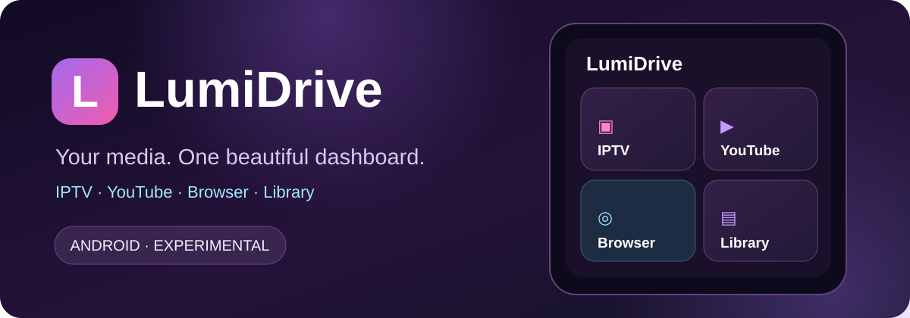

IPTV & M3U
Add playlists, browse channels and use the existing source and EPG settings.
IPTV, YouTube, web browsing and your media library in one Android app, wrapped in LumiDrive’s signature purple interface.
Quick access to your favorite content from a single home screen.
Add playlists, browse channels and use the existing source and EPG settings.
Jump into the integrated YouTube module from LumiDrive Home.
Open sites, search Google and navigate links without leaving the app.
Browse local files, folders, playlists and favorites.
Dedicated car components; compatibility varies by phone, Android Auto release and head unit.
Dark theme, vivid highlights and Russian/English interface options.

Deep purple surfaces, subtle gradients, vibrant cyan and pink accents, large tiles and simple navigation. The adjacent illustration is a stylized concept, not an actual app screenshot.
LumiDrive is an independent derivative of Fermata Media Player. Original authorship and the GNU GPL‑3.0 license are acknowledged in the repository.
This is experimental software. Back up important playlists and settings before upgrading; compatibility may vary.
Get a verified APK from the official GitHub Release. Each release also provides a SHA‑256 checksum.
Checking latest version…
APK for compatible ARM64 Android devices. Update over your existing LumiDrive installation without uninstalling when signatures match. Android may request permission to install from this source.
If the project is useful to you, you can optionally support ongoing development using Binance Pay.
Support with Binance PayRecipient: User-92ef9
Double-check the recipient in Binance before confirming payment. Donations are completely optional.